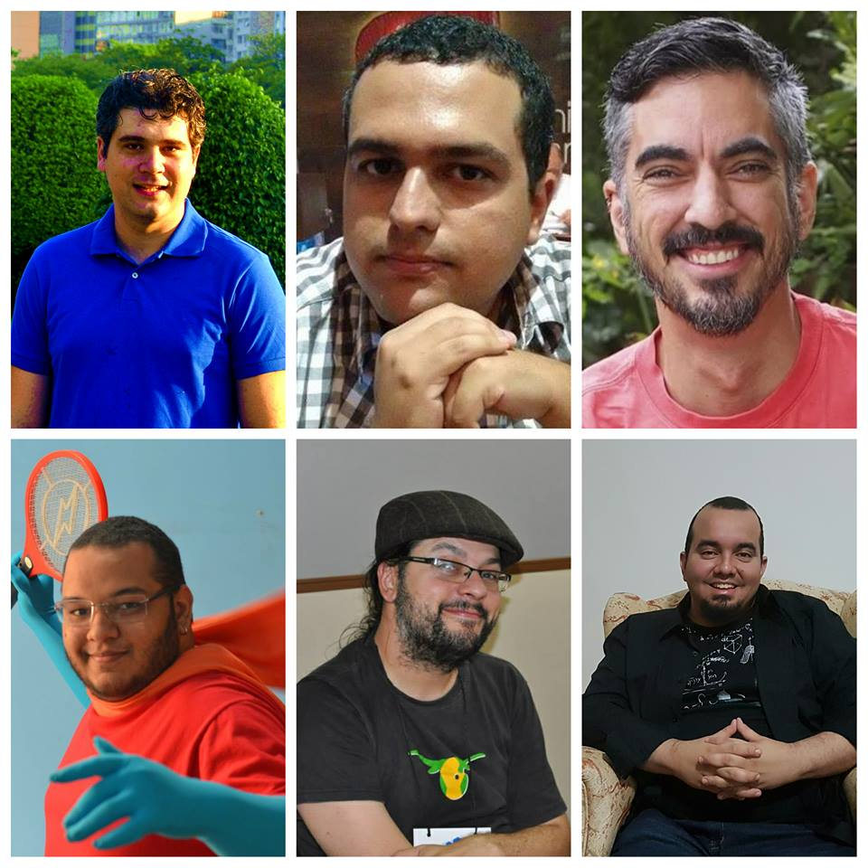

Hackathon SESI Cultura Digital 2016
13 a 15 de Outubro de 2016 - Rio de Janeiro
Equipe
Henrique Andrade | Vitor Balbio | Miguel Lessa

Kim Kaznowski | Cadunico | Bruno Horácio
##PROGRAMAÇÃO
####**Dia 13/10/2016 - SENAI Laranjeiras (Rua Esteves Júnior, nº 47)**
- 9h - Recepção
- 9h30 às 12h - Oficina Modelagem tridimensional
- 13h às 15h30 - Oficina Engines de jogos 3D
- 15h30 às 18h - Oficina SDKs para realidade aumentada
##PROGRAMAÇÃO
####Dia 14/10/2016 - SENAI Laranjeiras (Rua Esteves Júnior, nº 47)
- 9h às 18h - Desenvolvimento dos projetos
##PROGRAMAÇÃO
####Dia 15/10/2016 - Teatro do SESC (Av Graça Aranha, nº 1)
- 9h às 16h - Desenvolvimento dos projetos
- 16h - Apresentação dos projetos e entrega da premiação
###PREMIAÇÃO
- 1o colocado: R$ 8.000,00 brutos ao grupo e possibilidade de contratação pelo SESI
- 2o colocado: R$ 4.000,00 brutos ao grupo
- 3o colocado: bolsas de estudos em curso no SENAI Laranjeiras
###GRUPOS
- Informar composição até sexta-feira 12h
- Mínimo: 3 membros
- Máximo: 5 membros
###DESENVOLVIMENTO
- Todos os projetos devem estar em uma licença livre no GitHub
- Não serão aceitos projetos realizados previamente ou código de software principal escrito anterior ao início da competição.
- Serão aceitas bibliotecas e outras fontes de código, desde que recebendo créditos e informando suas fontes e links para download.
- https://github.com/hackathonsesi2016
###Apresentação final
- 10 minutos para cada grupo
- O que é o projeto e como funciona;
- Inovação ao atender demandas inéditas no mercado;
- Resultados esperados;
- Limitações e potenciais implementações de melhoria;
- Formas de monetização e potencial econômico, caso seja um produto comercial;
- Formas de implementação do projeto e o impacto para a sociedade considerando ograu de independência de políticas públicas para tal, caso não seja produto comercial.
###Critérios de avaliação
* criatividade
* originalidade
* impacto social
* qualidade da documentação
* implementabilidade
###COMUNICAÇÃO
- **Canal do Hackathon SESI**
- https://telegram.me/hackathonsesi
- Espaço oficial de envio de informativos onde apenas a coordenação do hackathon pode enviar mensagens
- **Grupo de Participantes do Hackathon SESI 2016**
- https://telegram.me/grupohackathonsesi
- Grupo de bate-papo livre para todos os participantes do evento. Espaço ideial para tirar dúvidas e compartilhar informações com os participantes e tutores.